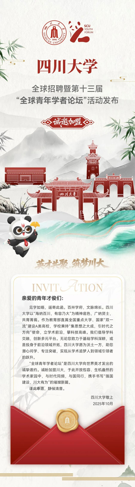

学院通知 · 科研创新
四川大学华西药学院第13届“全球青年学者论坛--华西药学分论坛“诚邀全球青年学者！
发布时间：2025-10-22
学校主论坛时间 2025 年 11 月 27 日 详情请见： https://mp.weixin.qq.com/s/o49TIcW6x8RXh4ZFbFt1Tg 华西药学分论坛时间 2025 年 11 月 28 日 分论坛报名时间 即日起 分论坛参会方式：线下及线上 请发送个人简历至：华西药学院许老师 邮箱： xyq1972@126.com 电话： +86-028-85502640 招聘方向 药学方向 药理学、生物技术药物学、临床药学、药事管理学、药物分析学、生药学、天然药物化学、药物化学、药剂学等 研究领域 中药 / 民族药（资源、药理、质量控制）、高原药物研发、靶点发现与机制研究、 AI 辅助药物设计、合成生物学、自动化合成、工业药剂学、 AI 结合制剂技术、转化医学、精准医疗、药品监管、药物政策与经济学等 薪酬待遇按照学校文件执行，按照岗位类别提供相应科研启动经费、招生指标、住房待遇和保障服务。 参会条件 年龄原则上不超过 40 岁。 在国内外高水平大学、研究机构取得药学及相关学科博士学位。 具有海外 2 年及以上博士后或工作经历并取得突出学术成果者优先。 华西药学院简介 四川大学华西药学院的前身是仁济医院（华西医院前身）制药专修学校，由加拿大人米玉士博士（ E.N. Meuser,1880 — 1970 ）创建于 1918 年，是全国公认的 5 所历史最为悠久的药学院系之一，也是我国最早开展药学教育和最早设立药学一级学科博士点授权的单位之一。 华西药学院现设药学和临床药学两个本科专业，为药学一级学科博∕硕士学位授权单位，并设有药学博士后流动站 1 个。下设 9 个药学二级学科，其中药剂学为国家重点学科、药物化学为四川省重点学科，形成了从药物先进制造与新药研发到合理用药与药学服务及政策研究等药学各领域的全覆盖，是目前国内为数不多的、学科设置最为齐全的药学院校之一。 华西药学院历经百年的发展已形成优良的办学传统，综合实力雄厚，学科声誉蜚声海内外。药学学科连续保持软科中国顶尖学科，药学、临床药学专业连续保持软科中国大学专业排名 A+ 。药理和毒理学 ESI 排名进入全球前 0.180 ‰，现为四川大学重点支持的“双一流”建设学科。 以传承华西百年药学教育为己任，以跻身世界一流药学院为目标，在新一轮 学科发展的历史机遇下，我们诚挚邀请全球英才加盟，再续华西药学院百年辉煌！ 关注我们 欢迎关注学院网址（ http://pharmacy.scu.edu.cn / ）；微信公众号：“川大华西药学院”。
